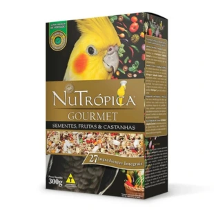

Ração Nutropica Gourmet para Calopsitas

- Preço
- R$ 49,90
- Marca
- Nutropica
- Peso
- 300g
- Indicação
- Calopsitas
- Sabor
- Sementes, Frutas e Castanhas
- Composição
- Alpiste, arroz cateto, aveia sem casca, castanha de caju, cártamo, cevada, chia, erva doce, ervilha, girassol branco, laranja desidratada, lentilha rosa, maçã desidratada, mamão desidratado, milheto, painço alemão, painço, painço preto, painço verde, painço vermelho, perila branca, pimenta rosa, quinoa, senha, sorgo branco, trigo sarraceno, milho integral*, trigo integral, aveia integral, arroz, soja integral micronizada*, ovo integral desidratado, linhaça integral, polpa de beterraba, levedura seca de cerveja, óleo de girassol, mananoligossacarídeos, frutoligossacarídeos, extrato de yucca, fostato bicálcico, carbonato de cálcio, cloreto de sódio, vitamina A, betacaroteno, vitamina D3, vitamina E, vitamina K, vitamina C, colina, biotina, ácido fólico, niacina, ácido pantotênico, vitamina B1, vitamina B2, vitamina B6, vitamina B12, selênio, cobre, iodo, manganês, zinco, antioxidantes (BHA e BHT), aditivo probiótico, aromatizante e corante alimentícios. *Milho e Soja geneticamente modificados por Agrobacterium tumefaciens, Bacillus thuringiensis e Streptomyces viridochromeogenes